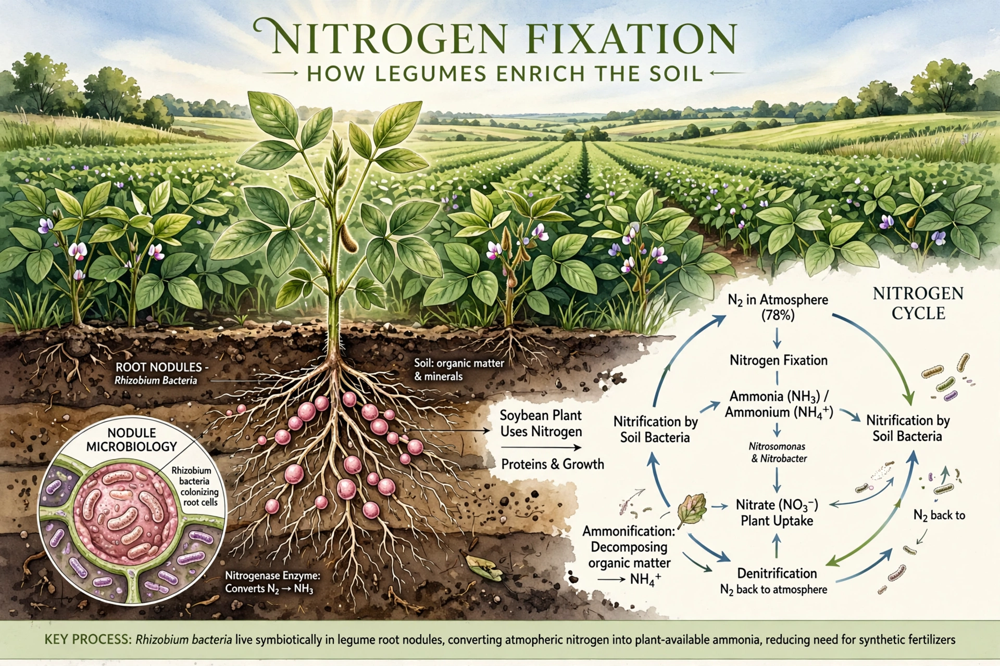

Nitrogen fixation is a chemical process by which molecular nitrogen (N2) in air, largely unreactive, is converted into ammonia (NH3) or related nitrogenous compounds available to organisms. It is essential for life, as nitrogen is required for amino acids, proteins and nucleic acids.

Biological nitrogen fixation is performed by diazotrophic bacteria and archaea using the enzyme nitrogenase, at high ATP cost. Symbiotic fixers such as Rhizobium live in root nodules of legumes (peas, beans, clover, soy). Free-living fixers include cyanobacteria such as Anabaena and Nostoc, important in oceans and rice paddies.
The Haber–Bosch process, developed in the early 20th century, fixes nitrogen industrially at high temperature and pressure over iron catalysts, producing fertiliser that supports roughly half of world food production. Lightning also fixes small amounts, forming nitrogen oxides that wash down as nitrate. See Nitrogen dioxide.
Fixation is the entry point of the nitrogen cycle, followed by nitrification, assimilation, ammonification and denitrification, which returns N2 to the atmosphere. Excess fertiliser causes eutrophication and nitrous oxide emissions.